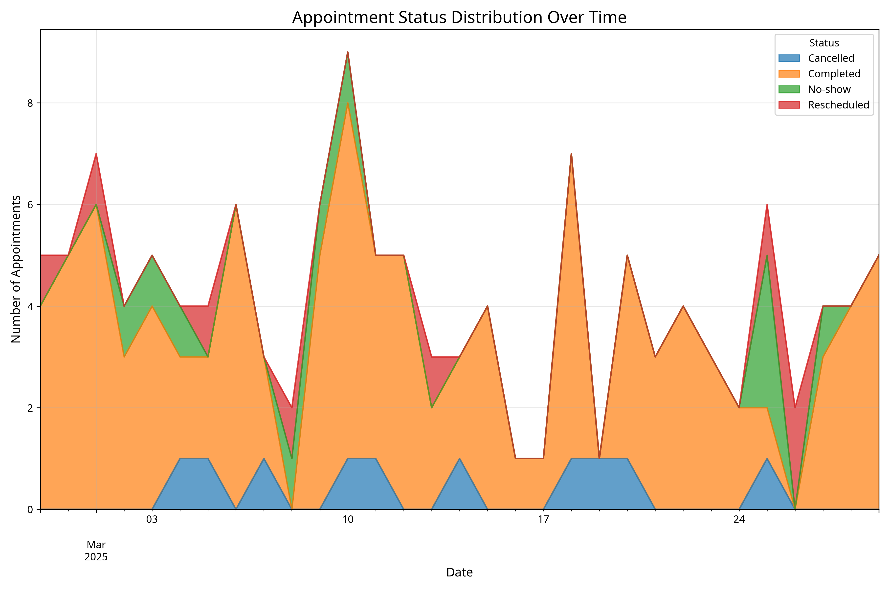
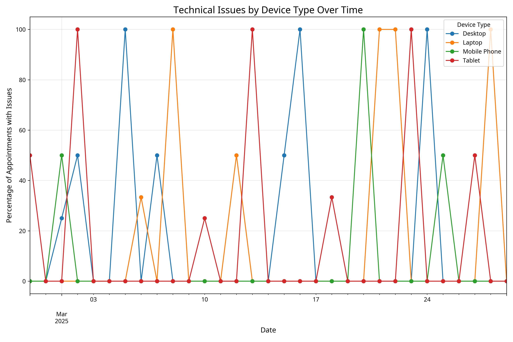
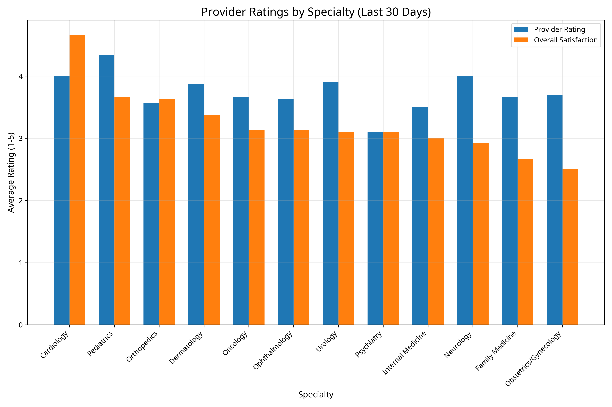

Telemedicine Pipeline Monitoring Dashboard
System health, metrics, and alerts for the Telemedicine Appointment Data Pipeline
Appointment Status Distribution Over Time

Technical Issues by Device Type Over Time

Provider Ratings by Specialty
